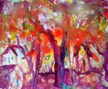
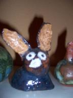
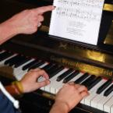
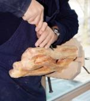
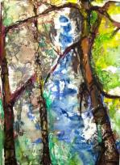
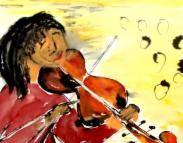
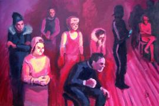
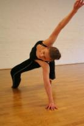

Informationen über Kursinhalte, Kurszeiten und Gebühren sowie die Anmeldung unter Telefon 040 771 10 303 bzw. www.vhs-hamburg.de.
- Termine
- Montags von 17.00-18.30 Uhr und 18.30-20.00 Uhr
- Kursleitung
- Helga Hentschel
- Beginn
- Dienstag, 7.2.17, von 10-13 Uhr
- Kursleitung
- Gabriele Wendland
www.gabriele-wendland.de - Kursgebühr
- 120,- € / Semester
- Beginn
- Dienstag, 7.2.17, von 16.30-18.00 Uhr
- Kursleitung
- Teresa Werdier
- Kursgebühr
- 80,- € für 15 Male exkl. Material
- Beginn
- Dienstag, 7.2.17, von 18.30-21.30 Uhr
- Kursleitung
- Dörte Ellerbrock
- Kursgebühr
- 160,- € inkl. Modellkosten
- Termine
- Dienstags von 20.00-21.30 Uhr
- Kursleitung
- Elisabeth Trudzinski
- Beginn
- Mittwoch, 1.2.17
- Dienstag, 7.2.17
- Kursleitung
- Bettina Sehlbach
www.musik-sehlbach.de - Kursgebühr
- 60,- € monatlich für 1/2 Std. Einzelunterricht / 18 Male (5 Monate)
- Beginn
- Mittwoch von 16.00-17.30 Uhr auf Anfrage
- Kursleitung
- Gabriele Wendland
www.gabriele-wendland.de - Kursgebühr
- 75,- € für 15 Male
- Termine
- Mittwochs, 18.45-20.30 Uhr
- Kursleitung
- Henry Holland
- Beginn
- Mittwoch, 1.2.17, von 17-20 Uhr
- Kursleitung
- Christian Richert
maha-richi.jimdo.com - Beginn
- Donnerstag, 2.2.17, von 9-12 Uhr
- Kursleitung
- Yves Rasch
www.schwuenge.de - Beginn
- Donnerstag, 2.2.17, von 15-18 Uhr
- Kursleitung
- Christian Richert
maha-richi.jimdo.com - Kursgebühren
- 145,- € für 15-18 Male je nach Gruppengröße
- Beginn
- Mittwoch, 1.2.17, von 18.30-21.30 Uhr
- Kursleitung
- Elke Nack-Karstens
www.elkenack-karstens.de - Beginn
- Freitag, 3.2.17, von 10-13 Uhr
- Kursleitung
- Angelika Holzmann
- Kursgebühr
- 120,- €
- Beginn
- Donnerstag, 2.2.17, von 15-18 Uhr
- Kursleitung
- Dörte Ellerbrock
- Kursgebühr
- 120,- €
- Beginn
- Donnerstag, 2.9.17; Uhrzeiten nach Absprache
- Kursleitung
- Dietwalt Mauruschat
www.violine-gesang.de - Kursgebühr
- 70,- € monatlich 1/2 Stunde Einzelunterricht / Semester (5 Monate, 18 Male)
- Beginn
- Donnerstag, 2.2.17, von 19.30-21.30 Uhr
- Kursleitung
- Kristine Drengere
- Kursgebühr
- 120,- €
- Beginn
- Donnerstag, 2.2.17, von 18.30-21.30 Uhr
- Kursleitung
- Branimir Georgiev
www.brageo.de - Kursgebühr
- 120,- €
- Beginn
- Donnerstag, 2.2.17 von 16.30-18 Uhr
- Kursleitung
- Wiebke Heinrich
- Kursgebühr
- 75,- € für 15 Male
- Termine
- Freitags von 9.00-10.30 Uhr und von 10.30-12.00 Uhr
- Kursleitung
- Anne Wechmann
www.anne-wechmann.de - Termine
- Freitags von 18.30-21.30 Uhr
- Ansprechpartnerin
- Susanne Brussolo
Dienstag
Maltechniken
Aquarell, Acryl, Kreiden... Gabriele Wendland, freiberufliche Künstlerin aus Hamburg, ist bekannt durch viele Ausstellungen und u.a. ihre Arbeit an der Kunsthalle Hamburg. Sie passt die Kursinhalte ihren KursteilnehmerInnen an und betreut sie individuell. Ob jung oder alt, fortgeschritten oder Anfänger: In dieser Gruppe findet jeder seinen Platz!
Töpferschule für Kinder
Unter der fachkundigen Anleitung von Künstlerin Teresa Werdier können Kinder kneten, formen und sich durch das urtümliche Material Ton in ihrer Fantasie beflügeln lassen. Ton eignet sich hervorragend, um Motorik und Sensibilität von Händen und Fingern zu trainieren und zu stabilisieren und auf spielerische Weise Techniken in Aufbau und Oberflächengestaltung zu erlernen.
Abrechnung der Kursgebühr über das "Bildungspaket" ist möglich.
Figürliches Zeichnen/Akt
Mit wechselnden Modellen (weiblich/männlich) wird hier das Auge trainiert, die menschlichen Formen in all ihrer Vielfalt und Beweglichkeit erfasst und mit Hilfe verschiedener Techniken zu Papier gebracht.
Aktzeichnen ist die Grundlage für jede Art der figürlichen Darstellung!

Yoga
Informationen über Kursinhalte, Kurszeiten und Kosten sowie Kursanmeldung bitte direkt unter Telefon: 040 765 62 92, E-Mail: etrudzinski@web.de
Dienstag / Mittwoch
Klavier / Gesang
Bettina Sehlbach, Pädagogin für Klavier und Gesang, unterrichtet an mehreren Orten in Hamburg und Umgebung.
Die Zeiten innerhalb der beiden Tage werden individuell mit den TeilnehmerInnen abgestimmt.
Für Kinder ist die Abrechnung über das "Bildungspaket" möglich.
Mittwoch
Kindermalschule
Gabriele Wendland bietet in der Kindermalschule Kindern von 5-10 Jahren viel Spaß mit dem Medium Kunst.
Verschiedene Maltechniken und Stilrichtungen werden mit vielen Materialien ausprobiert und nach den Vorstellungen der Kinder umgesetzt.

Die Abrechnung über das Bildungspaket ist möglich.
Teatimetalk
Informationen über Kursinhalte, Kurszeiten und Gebühren sowie Kursanmeldungen finden Sie unter www.teatimetalk.de, direkt unter Telefon 040 702 95 373; E-Mail: info@teatimetalk.de
Mittwoch / Donnerstag
Holzbildhauerei
Zwei Künstler mit Spezialgebiet Holzbildhauerei unterrichten regelmäßig im Kulturhaus: Christian Richert und Yves Rasch. Beide fördern ihre KursteilnehmerInnen individuell und unterstützen die eigenschöpferische Entwicklung und Umsetzung in figürliche oder abstrakte Arbeiten.
Eine Probestunde und ein späterer Einstieg sind möglich! Bitte im Büro nachfragen.
Mittwoch / Freitag
Aquarellmalerei
Sehen lernen und das Gesehene in ein Bild umsetzen möchten viele - alles, was dazugehört, ist Geduld mit sich selbst und fachliche Unterstützung, um spielerisch mit Farben umgehen zu lernen, sie gezielt einzusetzen und damit einen eigenen Stil zu entwickeln. Alles das findet man in den Aquarellkursen, die u.a. Themen wie Landschaft, Stillleben oder Porträt behandeln.
Donnerstag
Stillleben, Zeichnen und mehr
Es sind nicht nur Stillleben, die in diesem Kurs entstehen, sondern auch Porträts, Landschaften oder, wenn das Auge ermüdet ist, auch mal Kollagen, Materialbilder oder Monotypien. Es wird aquarelliert, gezeichnet, gemalt und mit Pastellkreiden gearbeitet. Der Kurs hat TeilnehmerInnen ab 10 Jahren, die mit allen anderen Altersgruppen ein Superteam bilden!
Geige / Gesang
Dietwalt Mauruschat, freier Musiker und Spezialist für Violine, Viola und Gesang, ist viel auf Konzert- und Opernbühnen unterwegs. Er unterrichtet außer im Kulturhaus an vielen Orten Hamburgs.
Die Abrechnung der Kursgebühr für Kinder ist über das "Bildungspaket" möglich.
Energy Dance / Yoga
Energy Dance ist Bewegungstraining für alle, die Lust auf Bewegung und Rhythmus haben. Vielfältige dynamische Bewegungen werden zu fließenden Abläufen verbunden, ganz ohne Choreografie. Jeder kann mitmachen!
Energy Dance aktiviert das Herz-Kreislauf-System, erhöht das eigene Körpergefühl und die Flexibilität, verbessert die Körperhaltung, baut Stress ab und macht einfach Spaß.
Aus dem Yoga werden intensive Körperübungen zur Dehnung und Kräftigung der Muskulatur kombiniert. Erholsame Entspannung rundet den Abend ab.

Acrylmalerei
Die Bandbreite des Kurses schließt sowohl naturalistisches als auch abstraktes Arbeiten mit ein, ebenso Techniken von Nass-in-Nass (wie beim Aquarellmalen) bis Impasto (wie beim Ölmalen). Kursleiter ist Branimir Georgiev, ein Künstler mit Bilderbuchlebenslauf. Er ist Kunstpädagoge, Maler, Zeichner, Grafiker und Mediengestalter, der bereits in seiner Heimat Bulgarien Auszeichnungen für seine Arbeiten erhalten hat.
Tanzpiraten
Wiebke Heinrich, Tanzpädagogin mit viel Erfahrung mit Kids - auch in Schulen - setzt den Bewegungsdrang der Kinder in Rhythmusgefühl und motorische Koordination um. Sie nutzt dabei die Grundlagen des Balletts in Bezug auf Balance und Aufrichtung, die Grundlagen von Hip Hop und Breakdance zur Schulung verschiedener Bewegungsqualitäten bis hin zur Akrobatik und die freie Improvisation zur Förderung von Selbstständigkeit, Kreativität und Ausdrucksfähigkeit.
Für Kinder ab 3 Jahre
Abrechnung über das Bildungspaket möglich!
Freitag
Feldenkrais / VHS-Kurs
Informationen über Kursinhalte, Kurszeiten und Gebühren sowie Anmeldungen unter www.vhs-hamburg.de oder Telefon 040 771 10 303
Freie Ateliergemeinschaft L.A.R.S.
Informationen bitte direkt über Susanne Brussolo Telefon 040 701 50 30 oder mobil 0173 613 11 77.